Ciag Fibonacciego
Opis
Wzór Bineta
Jawny wzór na n-ty wyraz ciągu Fibonacciego podany w 1843 r. przez J.P.M. Bineta możemy otrzymać, korzystając z metody funkcji tworzących. Niech
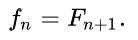Funkcja tworząca dla tego ciągu ma postać
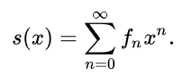Podstawiając
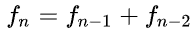otrzymujemy:
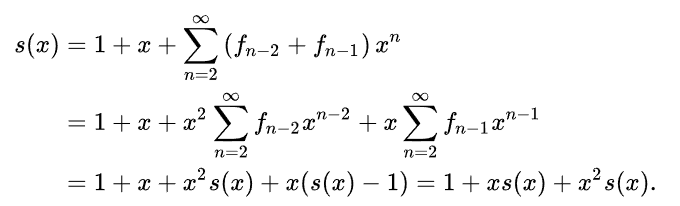W szczególności,

Wyrażenie
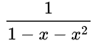można przedstawić w prostszej postaci, mianowicie:

gdzie:
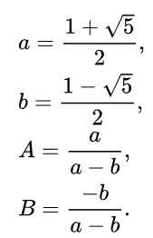Wówczas:
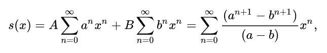a stąd:
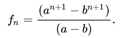Ponieważ
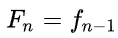wyprowadzony został ostatecznie tzw. wzór Bineta zwany czasem wzorem Eulera-Bineta:
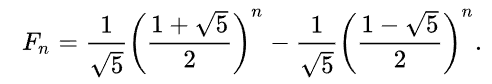Ponieważ drugi człon tego wyrażenia szybko zbiega do zera
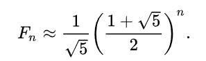 Własności
Sumy wyrazów tworzące ciąg Fibonacciego na trójkącie Pascala.
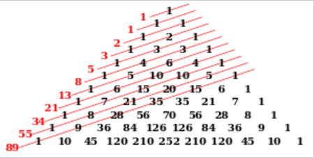Ciąg kwadratów, których długości boków są kolejnymi liczbami Fibonacciego
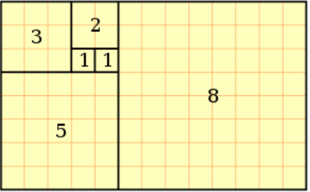 Obliczanie liczb Fibonacciego
Teoretycznie wartości kolejnych wyrazów ciągu Fibonacciego mogą być obliczone wprost z definicji, jest to jednak metoda na tyle wolna, że stosowanie jej ma tylko sens dla niewielu początkowych wyrazów ciągu, nawet na bardzo szybkich komputerach. Wynika to z tego, że definicja Fn wielokrotnie odwołuje się do wartości poprzednich wyrazów ciągów. Drzewo wywołań takiego algorytmu dla parametru n musi co najmniej Fn liści o wartości 1. Ponieważ ciąg Fibonacciego rośnie wykładniczo, oznacza to wyjątkowo słabą wydajność. Istnieje równie prosta i znacznie szybsza metoda. Obliczamy wartości ciągu po kolei: F0,F1,F2 i tak aż do Fn, za każdym razem korzystając z tego, co już obliczyliśmy. Nie trzeba nawet zapamiętywać wszystkich obliczonych dotychczas wartości, ponieważ wystarczą dwie ostatnie. Daje to złożoność liniową – o wiele lepszą od wykładniczej złożoności poprzedniej metody. Metoda ta może być postrzegana jako zastosowanie programowania dynamicznego.
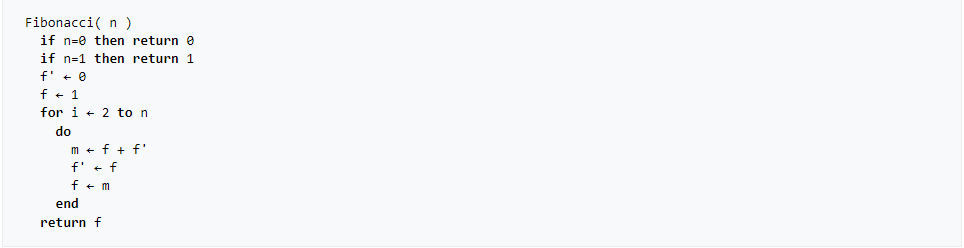 Graficzna reprezentacja dwójkowa
Jeśli kolejne wyrazy ciągu zapisać w systemie dwójkowym, jeden pod drugim, z wyrównaniem do prawej strony, to otrzymamy wydłużający się w dół trójkąt, którego elementy powtarzają się („czubek” pojawia się poniżej, przy prawej krawędzi, w coraz dłuższym rozwinięciu – pojawia się nad nim „biały trójkąt”), co czyni go podobnym do fraktala. Dla lepszej przejrzystości na rysunku obok wszystkie zera zastąpiono białymi punktami, a jedynki – czarnymi.
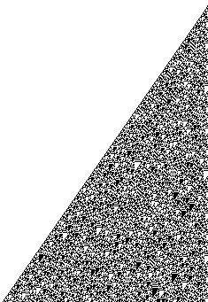 Złota liczba
Granica ciągu (wartość, w której dowolnym otoczeniu znajdują się prawie wszystkie (tzn. wszystkie poza co najwyżej skończenie wieloma) wyrazy danego ciągu. Inaczej – wartość, dowolnie blisko której leżą wszystkie wyrazy ciągu o dostatecznie dużych wskaźnikach.):
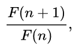czyli ilorazów sąsiadujących ze sobą wyrazów ciągu Fibonacciego, to tzw. złota liczba lub złota proporcja definiowana jako dodatnie rozwiązanie równania:
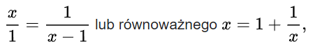czyli
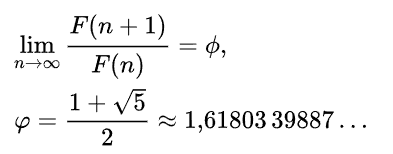 Liczby pierwsze w ciągu Fibonacciego